YOU CAN DO
THE RUBIK'S CUBE
By following this guide you can :
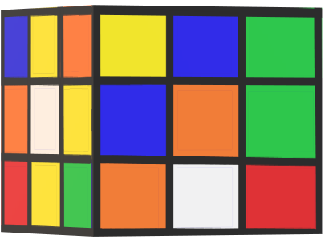
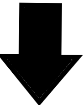
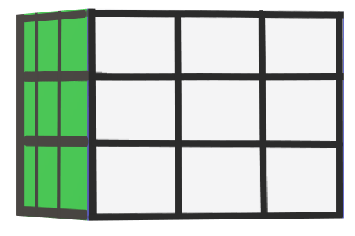
- You will be learning the Layer Method to solve your Rubik's Cube.
- The Gray Area on the Rubik's Cube mean that at the stage you are working on, the color of the gray pieces doesn't matter.
GET TO KNOW YOUR RUBIK'S CUBE (1st Part)
- Layer
There are three horizontal layers in a 3X3 Rubik's Cube.
Using this guide, you will solve the Rubik's Cube layer by layer.
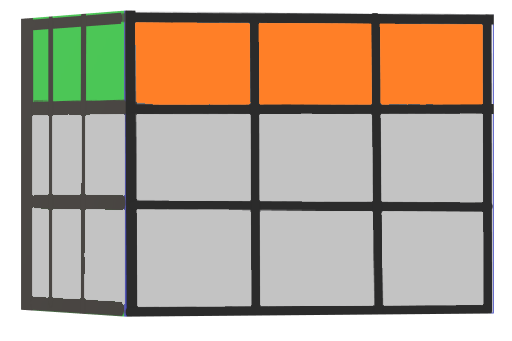Top Layer
 Middle Layer
Middle Layer
 Bottom Layer
Bottom Layer
- Face
Each flat surface is a face.
There are 6 faces on a Rubik's Cube.
- Centers
Center pieces have one coloured tile.
There are 6 center pieces.
Center pieces are single tiles, fixed to
the internal core.
When correctly solved, each face will
be the color of its center piece.
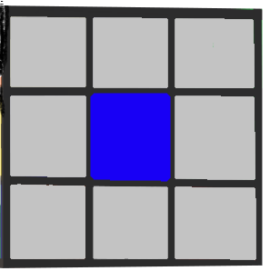
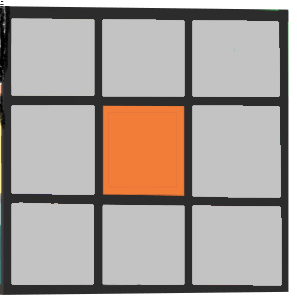
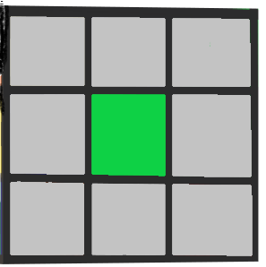
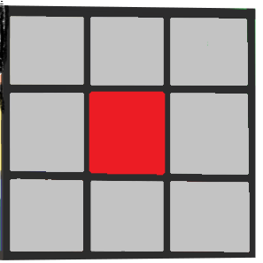
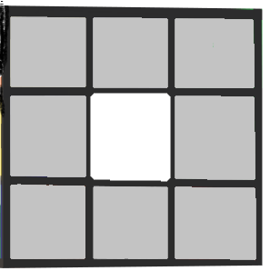
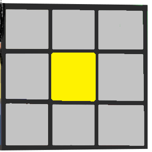
You use one finger to touch a CENTER piece.
These center pieces colors
are always opposite each other, as shown in the above animation.
- Edges
Edge pieces have two coloured tiles.
There are 12 edge pieces.
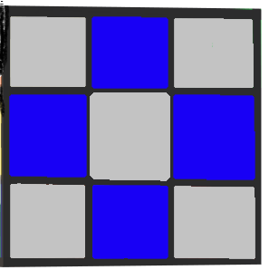
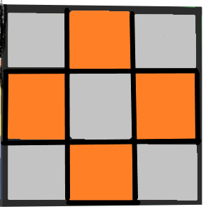
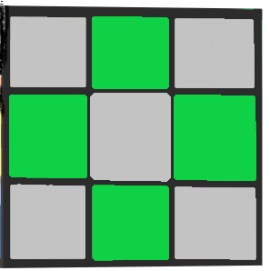
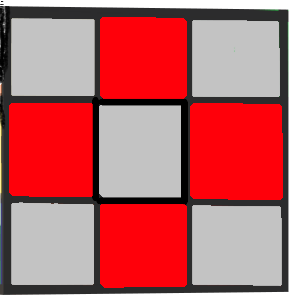
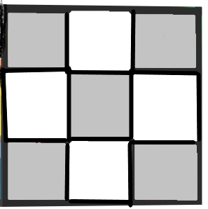
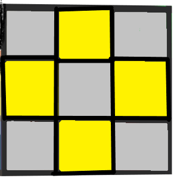
You use two fingers to pinch an EDGE piece.
- Corners
Corner pieces have three coloured tiles.
There are 8 corner pieces.
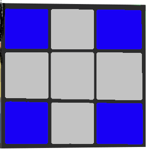
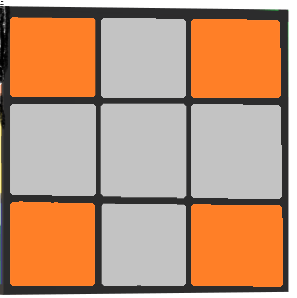
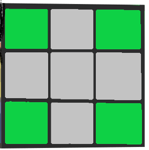
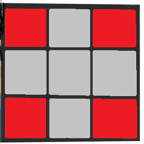
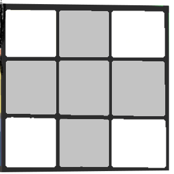
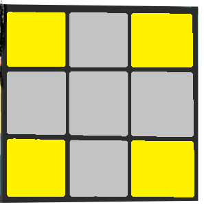
You use three fingers to touch all sides of a CORNER piece.
GET TO KNOW YOUR RUBIK'S CUBE (2nd Part)
U = Up Face
 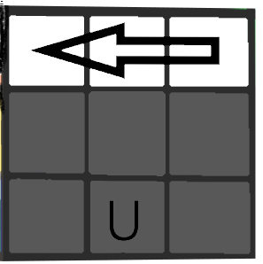
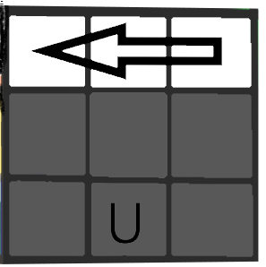
D = Down
 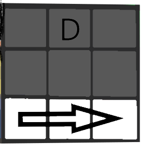
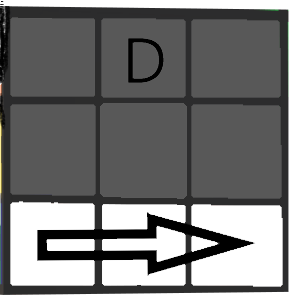
L =Left Face
 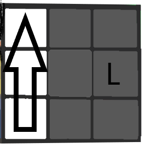
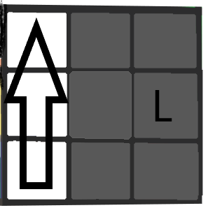
R = Right Face
 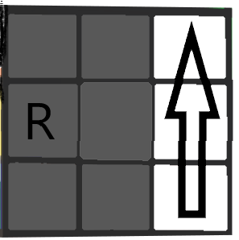
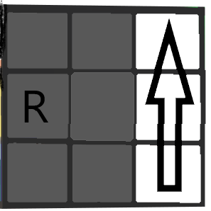
F = Front Face
 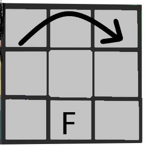
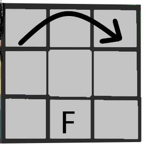
 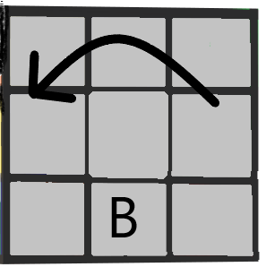
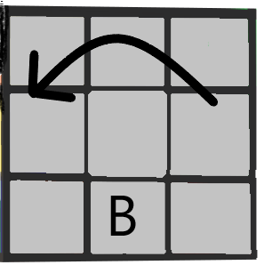
At the back face of your cube.
GET TO KNOW YOUR RUBIK'S CUBE (3rd Part)
Each move is a 1/4 TURN.
An ALGORITHM is a sequence of moves that you need to do in a specific order.
When following the algorithms in this guide, it is important to maintain the FRONT
face of your Rubik's Cube so it stays the FRONT through all of the turns.
- If there is a 2 next to the algorithm letter, turn the face twice.
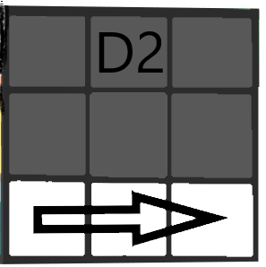
- A turn is a clockwise when looking at that face directly. A letter with an apostrophe(')
after it means to make an inverse or counterclockwise turn of the face.
SOLVE LAYER ONE
STEP 1: CREATE A WHITE CROSS
- Hold your cube with the yellow center piece on the UP (U) face.
UP FACE
Action 1
Look at the top layer to locate the
EDGE pieces that have a WHITE  tile. Leave them where they are.
tile. Leave them where they are.
See example to the right and
notice that at this stage it is okay
if the white tile is not touching
the YELLOW CENTER piece.
Action 2
Look at the middle layer.Move EDGE
pieces that have a WHITE tile from
 the MIDDLE layer into the top layer.
the MIDDLE layer into the top layer.
TIP
Be careful not to bump
out the white edges
already in the cross.

Rotate the UP (U) face to
move a white
edge out of
the way before moving
another
white edge into
the cross.
For example, as shown in the right figure.
Then follow the following algorithm.
Action 3
Look at the bottom layer.
Move EDGE
pieces that
have a WHITE tile from
 (Front Face is that face
(Front Face is that face
where the arrow is indicated.)
the BOTTOM layer into
the top layer, then follow the following algorithm.
Don't forget the previous tip.
TIP
Sometimes, when you place
the edge
in the top layer, the
WHITE tile is not
on the UP face
and it needs to be “flipped”.
Holding Your Rubik's Cube.
To “flip the edge,” so the White
tile
is on the UP face, hold your
 Rubik’s
Rubik’s
Cube so the edge that
needs to be
flipped is on the
RIGHT (R) face.
Follow this algorithm.
When your Rubik's Cube has a white cross
that looks like the following animation, you can move
to Step 2.
SOLVE LAYER ONE
STEP 2: CREATE A WHITE CROSS WITH MATCHED EDGES AND CENTER PIECES
Holding your Rubik’s Cube with the White Cross on the UP (U) face. Look at the FRONT face of the Rubik’s Cube.
Action 1
If the FRONT tile of the UP edge
piece matches the CENTER tile color, go to Action 2
on the STEP 1
If not, turn the UP (U) face until it does.
Then follow the following algorithm
 OR
OR
Action 2
Turn the FRONT face two times
(F2)
so that the WHITE tile is now
on the
DOWN (D) face.

Action 3
Repeat Action 1 & 2 for each WHITE edge.
Action 4
Once all 4 edges have been correctly placed, flip
your Rubik’s Cube over to see the WHITE cross
(with matching edge tiles on the RED, BLUE,
ORANGE and GREEN faces).
When your Rubik’s Cube has a
white cross with the center and
edge pieces matched, like the
following animation, you can
move to Step 3!
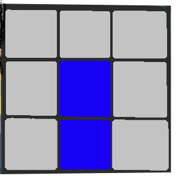
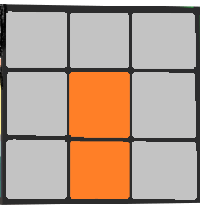
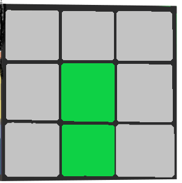
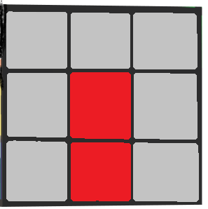


SOLVE LAYER ONE
STEP 3 : SOLVE THE WHITE CORNERS
- Holding your Rubik’s Cube with the White Cross on the UP (U) face. Look at the FRONT face of the Rubik’s Cube.
CORRECT PLACEMENT

The correct placement of a corner piece
is between center pieces with the same
colors. Notice on the image how a red/
blue/white corner goes between the red,
blue, and white center pieces.
Action 1
Locate a corner piece with a WHITE tile
in the bottom layer.
If your corner piece is in any of these
positions then go to Action 2.


If your corner piece is in the
top layer
but not in the correct (as shown in the
right figure)
location then see the tip below.

TIP
To get a corner with a
white tile from
the top
layer to the bottom
layer,
follow the following algorithm:
NOTE: Front Face will be
that face where red tile is.
Action 2
 Rotate the DOWN (D) face until
the corner is between the two
matching colored center tiles.
Rotate the DOWN (D) face until
the corner is between the two
matching colored center tiles.
See ‘Correct Placement’ note in step 1 and images below.
 OR
OR
 OR
OR

NOTE: Front face will be that face where the red center tile is present.
Action 3
Keeping the white cross on the
UP (U)
face, hold your Rubik’s
Cube so the
WHITE tile is on the
FRONT face.
If the WHITE tile is on the bottom,
see the tip below.
TIP
To change a White tile
from facing
down to
facing front:
- Hold your Rubik’s Cube
with the
corner
on the RIGHT face.
- Follow this algorithm.
If the WHITE tile is on the LEFT.

Front face will be the Center Blue for the following algorithm.
Notice: D moves the corner piece out of
the way,
L brings its corner position down,
D’ moves it into
place and then L’ brings it
up to the top layer.
If the WHITE tile is on the RIGHT.
Note: Front face will be that face where the white tile is present.
Follow this a algorithm.
NOTICE: D’ moves the corner piece out of the way,
R’ brings its corner position down, D moves it into
place and then R brings it up to the top layer.
Action 5
Continue Actions 1-4 on the previous page until all white corner pieces are
in the correct positions.
When your Rubik’s Cube looks
like the animation here, you have
one-third solved and you
can now learn to solve the
middle layer!
SOLVE THE MIDDLE LAYER
Holding Your Rubik's Cube.
Flip your Rubik’s Cube over so
the completed
WHITE face is
the DOWN face.
Action 1
Choose a FRONT face. Rotate the UP (U) face
to create a vertical line matching one of the
pictures below.


FRONT FACES
If you can’t match one of these pictures, pick another
FRONT face until you can match one of the pictures.
If you can’t make any vertical
lines, see tip below.
TIP

If you can’t make a vertical
line to match a picture above:
You will need to swap an edge
from the UP (U) face with an edge
already in the middle layer.
- Look in the MIDDLE layer to locate a
mismatched edge that doesn’t have
a yellow tile.
- Hold your Rubik’s Cube so the mismatched
edge in the middle layer is on the RIGHT face.
- Follow the algorithm ‘Moving Right’ after in this page.
- Now proceed to Action 1 given above.
Action 2
Moving The Edge To Left
If you’re moving the edge piece
to the left, follow these moves:


This algorithm
brings the edge
piece to the
correct
position in the
middle layer.
Moving The Edge To Left
If you’re moving the edge piece
to the right, follow these moves:


This algorithm
brings the edge
piece to the
correct
position in the
middle layer.
Action 3
Continue Actions 1-2 on the
previous page until all MIDDLE layer
pieces are in the correct positions.
When the two bottom layers
of your Rubik’s Cube look like
under this para's animation, you
can move to solving the third
layer. You are two-thirds of
the way done!
SOLVE THE FINAL LAYER
STEP 1: MAKE A YELLOW CROSS
Holding Your Rubik's Cube.
Match your Rubik’s Cube to one of the pictures
below. Focus on the YELLOW edges on the UP (U)
face only (not corners).


FRONT FACES
Action 1
Follow this algorithm:
Action 2
If the YELLOW Cross is not formed yet, REMATCH
your Rubik’s Cube to one of the pictures in the
‘Holding your Rubik’s Cube’ section above and
follow the algorithm again.
When your Rubik’s Cube looks
like the following animation,
move on to the next step!
STEP 2: ORIENT THE CORNERS
Holding Your Rubik's Cube.
Hold your Rubik’s Cube so the UP (U) face matches
one of the images in the table below.

FRONT FACE
TAKE ANY FRONT FACE


TAKE ANY FRONT FACE
Action 1
Follow this algorithm:
Notice the RIGHT (R) face turns in opposite
directions every other time and the UP (U) face
always turns clockwise.
Action 2
If you do not have all yellow tiles on the
UP (U) face you will need to REMATCH
and follow the algorithm. (You may need
to do this multiple times.)
When your Rubik’s Cube has all
the YELLOW on the UP (U) face,
like the following animation, move to Step 3!
STEP 3: POSITION THE YELLOW CORNERS
Holding Your Rubik's Cube.
Hold your Rubik’s Cube
with the YELLOW on the
UP (U) face.
Action 1
Twist the UP (U) face until two corners
are in the correct location. You will know
they are in the correct location if the
colored tiles match the center colors.
 CORRECT CORNER EXAMPLE
CORRECT CORNER EXAMPLE
Action 2
Hold your Rubik's Cube so that any two corners of same colour are correctly aligned at the BACK FACE (ignore if it is at wrong side of another colour). If there are no corners correctly aligned, then take any front face.
Now, follow this algorithm:
(At the Back Face)
(At the Back Face)
Action 4
If your corners are not correct at this
point, again check that if there are two corners which are correctly aligned.
When your Rubik's Cube looks like the animation, move on to the final step.
STEP 4: POSITION THE YELLOW EDGES
HOLDING YOUR RUBIK'S CUBE
Hold your Rubik’s Cube so the
one face that is a solid color(face in which all colours are present)
is the BACK, and the Yellow
face is the UP (U) face.
If no face is a solid color, it
doesn’t matter which face is
in the back.
Follow this algorithm up to 3 times to
move the unsolved edges CLOCKWISE /
TO THE LEFT.
YOU HAVE SOLVED THE RUBIK'S CUBE!
Click Here
To Play The Game Of Rubik's Cube-The Cube.
CREATED BY:
MOKSH